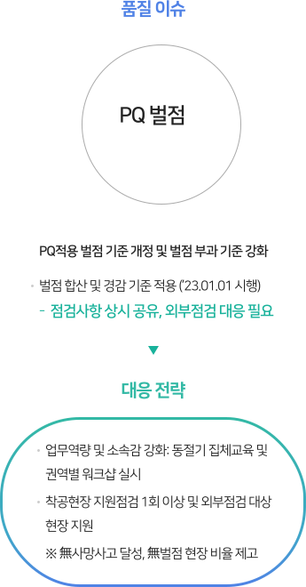
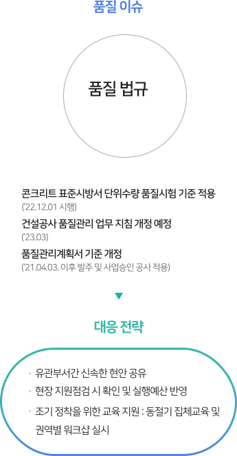

지속가능경영
Social
- 품질경영방침
-
동부건설은 고객에게 감동을, 주주에게 이익과 만족을 주는, '사회적 책임을 다하는 명품기업' 으로,
대한민국을 대표하는 지속가능한 종합건설기업을 만들기 위하여 다음과 같이 품질경영을 실천한다.- 기본과 원칙을 준수하는 품질경영을 실천한다.
- 리스크 관리의 내실화로 수익성을 확보한다.
- 빈틈없는 품질관리로 손실을 최소화한다.
- 업무역량을 강화하여 최적의 품질을 창출한다.
2023.03.22
동부건설 대표이사 윤진오
품질경영목표
- 부실 벌점 Zero
효과적인 품질관리
기본과 원칙을 준수하는 디테일한 공사관리- 01
- 효율적인 업무시스템 구축
- 효율적인 업무 기준 수립 및 지속적 개선
- 정보 공유 프로세스 운영 내실화
- 품질 커뮤니케이션 활성화
- 02
- 기본 역량 확보 및 전문 역량 강화
- 효율적인 업무 기준 수립 및 지속적 개선
- 정보 공유 프로세스 운영 내실화
- 품질 커뮤니케이션 활성화
- 03
- 건설 환경 법규 준수
- 지속적인 환경 교육 실시
- 환경관리 지원 및 점검 강화
- 효율적인 현장 자체 환경 점검 정착
품질경영체계

- 고객의 의견을 청취하고 반영하여 고객만족을
실현하고 있습니다 -
- 고객 만족을 위한 S4C (Satisfaction for Customer) 시스템 운영
고객중심 가치창조
- 혁신활동으로 품질을 지속적으로 개선하고 있습니다
-
- 제품 및 업무 프로세스 개선을 위한 다양한 혁신활동 전개
지속적인 품질개선
- 우수한 협력업체를 발굴하고 지원하여
품질 경쟁력을 강화하고 있습니다. -
- 협력업체 기술 지도 및 우수협력업체 인센티브 제도 운영
상생하는 협업관계
품질경영시스템 인증현황
동부건설은 고객의 요구사항에 부흥하는 최적의 품질시스템을 갖추고,
종합적인 품질보증시스템 체제를 구축하고자
1994년에 ISO 9001 규격을 취득하여 현재까지 유지하고 있습니다.

KS Q ISO 9001 : 2015
- 인증기관
-
- TUV NORD KOREA Ltd
- 인증서 발행일
-
- 2022.06.12
- 인증서 만료일
-
- 2025.06.11
- 인증범위
-
-
토목, 빌딩 및 주택, 플랜트(화학, 발전, 환경 및 산업시설 포함),
소방공사, 전기공사 및 통신공사의 설계, 개발, 프로젝트 관리,
구매, 건설, 운영 및 서비스
-
토목, 빌딩 및 주택, 플랜트(화학, 발전, 환경 및 산업시설 포함),
품질 이슈 대응
동부건설은 지속적인 품질개선을 통한 고객중심의 가치 창조를 위하여 다양한 품질 이슈에 대하여 대응전략을 수립, 실천하고 있습니다.
- 
- 

-
- 환경 이슈 : 외부 환경 점검
- 건설현장 환경법규 주요 위반사항 : 비산먼지 억제 조치 미흡, 소음진동 규제기준 초과 등 - 법규 위반사항 Zero를 위한 사전관리 철저
- 대응 전략
- 비산먼지 억제조치, 소음 저감노력 등 현장 환경 관련 리스크 예방 先조치 활동 실시
- 소음 관련 민원에 대한 조속한 협의
-
- 환경 이슈 : 환경법규
- 건설폐기물의 처리 등에 관한 업무처리지침 개정(2022.09.06) : 건설폐기물 분별해제(선분별·후해체) 펌프카 잔여 레미콘, 시멘트 포대 등의 분류처리기준 현실화 - 건설폐기물 분리보관 관련 지침 준수
- 대응 전략
- 현장 지원점검 시 환경담당자 교육
- 전사 폐기물 처리지침 안내
-
- 환경 이슈 : ESG
- 온실가스 목표관리 운영 등에 관한 지침 개정(2022.03.23.) : 온실가스 감축 관리
- 대응 전략
- 온실가스 사용량 목표 수립 및 월별 모니터링
- 기후변화 시나리오 작성 및 대응체계 수립